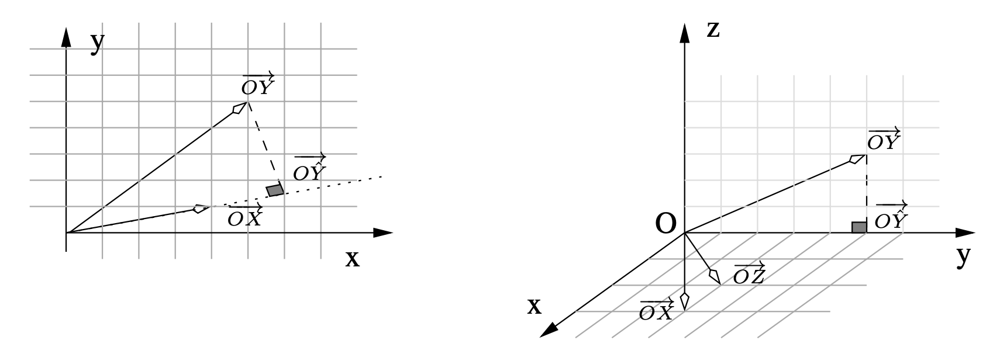

import pandas as pd
#import numpy as np
#import matplotlib
#import matplotlib.pyplot as plt
#from mpl_toolkits.mplot3d import Axes3D
#from pandas import DataFrame
#import statsmodels.api as sm
import statsmodels.formula.api as smf2 La régression linéaire multiple
Exercice 1 (Question de cours) A, A, B, B, B, C.
Exercice 2 (Covariance de \(\hat\varepsilon\) et \(\hat Y\)) Nous allons montrer que, pour tout autre estimateur \(\tilde{\beta}\) de \(\beta\) linéaire et sans biais, \(\mathop{\mathrm{V}}(\tilde{\beta}) \geq \mathop{\mathrm{V}}(\hat \beta)\). Décomposons la variance de \(\tilde{\beta}\) \[\begin{eqnarray*} \mathop{\mathrm{V}}(\tilde{\beta}) = \mathop{\mathrm{V}}(\tilde{\beta} - \hat \beta+\hat \beta) =\mathop{\mathrm{V}}(\tilde{\beta} - \hat \beta)+\mathop{\mathrm{V}}(\hat \beta) - 2 \mathop{\mathrm{Cov}}(\tilde{\beta} - \hat \beta,\hat \beta). \end{eqnarray*}\] Les variances étant définies positives, si nous montrons que \(\mathop{\mathrm{Cov}}(\tilde{\beta}- \hat \beta,\hat \beta)=0\), nous aurons fini la démonstration.\ Puisque \(\tilde{\beta}\) est linéaire, \(\tilde{\beta} = A Y\). De plus, nous savons qu’il est sans biais, c’est-à-dire \(\mathbf E(\tilde{\beta}) = \beta\) pour tout \(\beta\), donc \(A X = I\). La covariance devient : \[\begin{eqnarray*} \mathop{\mathrm{Cov}}(\tilde{\beta} - \hat \beta,\hat \beta) &=& \mathop{\mathrm{Cov}}(A Y,(X'X)^{-1}X'Y) - \mathop{\mathrm{V}}(\hat \beta)\\ &=& \sigma^2 A X (X'X)^{-1} - \sigma^2 (X'X)^{-1}=0. \end{eqnarray*}\]
Exercice 3 (Théorème de Gauss Markov) Nous devons montrer que, parmi tous les estimateurs linéaires sans biais, l’estimateur de MC est celui qui a la plus petite variance. La linéarité de \(\hat \beta\) est évidente. Calculons sa variance : \[\begin{eqnarray*} \mathop{\mathrm{V}}(\hat \beta) = \mathop{\mathrm{V}}((X'X)^{-1}X'Y) = (X'X)^{-1}X'\mathop{\mathrm{V}}(Y)X(X'X)^{-1}=\sigma^2 (X'X)^{-1}. \end{eqnarray*}\] Nous allons montrer que, pour tout autre estimateur \(\tilde{\beta}\) de \(\beta\) linéaire et sans biais, \(\mathop{\mathrm{V}}(\tilde{\beta}) \geq \mathop{\mathrm{V}}(\hat \beta)\). Décomposons la variance de \(\tilde{\beta}\) \[\begin{eqnarray*} \mathop{\mathrm{V}}(\tilde{\beta}) = \mathop{\mathrm{V}}(\tilde{\beta} - \hat \beta+\hat \beta) =\mathop{\mathrm{V}}(\tilde{\beta} - \hat \beta)+\mathop{\mathrm{V}}(\hat \beta) - 2 \mathop{\mathrm{Cov}}(\tilde{\beta} - \hat \beta,\hat \beta). \end{eqnarray*}\] Les variances étant définies positives, si nous montrons que \(\mathop{\mathrm{Cov}}(\tilde{\beta}- \hat \beta,\hat \beta)=0\), nous aurons fini la démonstration.\ Puisque \(\tilde{\beta}\) est linéaire, \(\tilde{\beta} = A Y\). De plus, nous savons qu’il est sans biais, c’est-à-dire \(\mathbf E(\tilde{\beta}) = \beta\) pour tout \(\beta\), donc \(A X = I\). La covariance devient : \[\begin{eqnarray*} \mathop{\mathrm{Cov}}(\tilde{\beta} - \hat \beta,\hat \beta) &=& \mathop{\mathrm{Cov}}(A Y,(X'X)^{-1}X'Y) - \mathop{\mathrm{V}}(\hat \beta)\\ &=& \sigma^2 A X (X'X)^{-1} - \sigma^2 (X'X)^{-1}=0. \end{eqnarray*}\]
Exercice 4 (Représentation des variables) Nous représentons les données dans \(\mathbb R^2\) pour le premier jeu et dans \(\mathbb R^3\) pour le second.

Dans le premier modèle, nous projetons \(Y\) sur l’espace engendré par \(X\), soit la droite de vecteur directeur \(\overrightarrow{OX}\). Nous trouvons par le calcul \(\hat \beta = 1.47\), résultat que nous aurions pu trouver graphiquement car \(\overrightarrow{O \hat Y}= \hat \beta . \overrightarrow{OX}\).
Considérons \(\mathbb R^3\) muni de la base orthonormée \((\vec{i},\vec{j},\vec{k})\). Les vecteurs \(\overrightarrow{OX}\) et \(\overrightarrow{OZ}\) engendrent le même plan que celui engendré par \((\vec{i},\vec{j})\). La projection de \(Y\) sur ce plan donne \(\overrightarrow{O \hat Y}\). Il est quasiment impossible de trouver \(\hat \beta\) et \(\hat \gamma\) graphiquement mais nous trouvons par le calcul \(\hat \beta = -3.33\) et \(\hat \gamma =5\).
Exercice 5 (Modèles emboîtés) Nous obtenons \[\begin{eqnarray*} \hat Y_p = X \hat \beta \quad \hbox{et} \quad \hat Y_q= X_q \hat \gamma. \end{eqnarray*}\] Par définition du \(\mathbb R2\), il faut comparer la norme au carré des vecteurs \(\hat Y_p\) et \(\hat Y_q\). Notons les espaces engendrés par les colonnes de \(X_q\) et \(X\), \(\mathcal M_{X_q}\) et \(\mathcal M_{X}\), nous avons \(\mathcal M_{X_q} \subset \mathcal M_{X}\). Nous obtenons alors \[\begin{eqnarray*} \hat Y_p = P_{X_p}Y = (P_{X_q} + P_{X^{\perp}_q})P_{X_p}Y &=& P_{X_q}P_{X_p}Y + P_{X^{\perp}_q}P_{X_p}Y\\ &=& P_{X_q}Y + P_{X^{\perp}_q \cap X_p} Y\\ &=& \hat Y_q + P_{X^{\perp}_q \cap X_p} Y. \end{eqnarray*}\] En utilisant le théorème de Pythagore, nous avons \[\begin{eqnarray*} \| \hat Y_p \|^2 &=& \|\hat Y_q \|^2 + \| P_{X^{\perp}_q \cap X_p} Y \|^2 \geq \|\hat Y_q \|^2, \end{eqnarray*}\] d’où \[\begin{eqnarray*} \mathbb R2(p)=\frac{\| \hat Y_p \|^2}{\| Y \|^2} \geq \frac{\| \hat Y_q \|^2}{\| Y \|^2} =\mathbb R2(q). \end{eqnarray*}\]
En conclusion, lorsque les modèles sont emboîtés \(\mathcal M_{X_q} \subset \mathcal M_{X}\), le \(\mathbb R2\) du modèle le plus grand (ayant le plus de variables) sera toujours plus grand que le \(\mathbb R2\) du modèle le plus petit.
Exercice 6 La matrice \(X'X\) est symétrique, \(n\) vaut 30 et \(\bar x= \bar z=0\). Le coefficient de corrélation \[\begin{equation*} \rho_{x,z} = \frac{\sum_{i=1}^{30} (x_i -\bar x)(z_i - \bar z)} {\sqrt{\sum_{i=1}^{30} (x_i -\bar x)^2\sum_{i=1}^{30} (z_i - \bar z)^2}} =\frac{\sum_{i=1}^{30} x_i z_i} {\sqrt{\sum_{i=1}^{30} x_i^2 \sum_{i=1}^{30} z_i^2}} =\frac{7}{\sqrt{150}}=0.57. \end{equation*}\] Nous avons \[\begin{eqnarray*} y_i &=& -2 +x_i+z_i+\hat \varepsilon_i \end{eqnarray*}\] et la moyenne vaut alors \[\begin{eqnarray*} \bar y &=& -2 + \bar x +\bar z + \frac{1}{n}\sum_i \hat \varepsilon_i. \end{eqnarray*}\] La constante étant dans le modèle, la somme des résidus est nulle car le vecteur \(\hat \varepsilon\) est orthogonal au vecteur \(\mathbf{1}\). Nous obtenons donc que la moyenne de \(Y\) vaut 2 car \(\bar x=0\) et \(\bar z=0\). Nous obtenons en développant \[\begin{eqnarray*} \|\hat Y \|^2 &=& \sum_{i=1}^{30}(-2+x_i+2z_i)^2\\ &=& 4+10+60+14=88. \end{eqnarray*}\] Par le théorème de Pythagore, nous concluons que \[\begin{eqnarray*} \mathop{\mathrm{SCT}}=\mathop{\mathrm{SCE}}+\mathop{\mathrm{SCR}}=88+12=100. \end{eqnarray*}\]
Exercice 7 (Changement d’échelle des variables explicatives) Nous avons l’estimation sur le modèle avec les variables originales qui minimise \[\begin{align*} \mathop{\mathrm{MCO}}(\beta)&=\|Y - \sum_{j=1}^{p} X_j \beta_j \|^{2} \end{align*}\] Cette solution est notée \(\hat \beta\).
Nous avons l’estimation sur le modèle avec les variables prémultipliées par \(a_{j}\) (changement d’échelle) qui minimise
\[ \begin{align*} \tilde{\mathop{\mathrm{MCO}}}(\beta)&=\|Y - \sum_{j=1}^{p} \tilde X_j \beta_j \|^{2} = \|Y - \sum_{j=1}^{p} a_{j} X_j \beta_j \|^{2}\\ &= \|Y - \sum_{j=1}^{p} X_j \gamma_j \|^{2}=\mathop{\mathrm{MCO}}(\gamma), \end{align*} \]
en posant en dernière ligne \(\gamma_{j}=a_{j} \beta_j\). La solution de de \(\mathop{\mathrm{MCO}}(\gamma)\) (ou encore \(\mathop{\mathrm{MCO}}(\beta)\)) est \(\hat \beta\). La solution de \(\tilde{\mathop{\mathrm{MCO}}}(\beta)\) est alors donnée par \(\hat \beta_{j}=a_{j} \tilde \beta_j\).
Exercice 8 (Différence entre régression multiple et régressions simples)
Calculons l’estimateur des MCO noté traditionnellement \((X'X)^{-1}X'Y\) avec la matrice \(X\) qui possède ici deux colonnes (notées ici \(X\) et \(Z\)) et \(n\) lignes. On a donc \[\begin{align*} (X'X)&= \begin{pmatrix} \|X\|^{2} & <X,Z>\\ <X,Z> & \|Z\|^{2} \\ \end{pmatrix} \end{align*}\] Son déterminant est \(\Delta= \|X\|^{2}\|Z\|^{2} - 2 <X,Z>\) et son inverse est \[\begin{align*} \frac{1}{\Delta} \begin{pmatrix} \|Z\|^{2} & -<X,Z>\\ -<X,Z> & \|X\|^{2} \\ \end{pmatrix} \end{align*}\] Ensuite \(X'Y\) est simplement le vecteur colonne de coordonnées \(<X,Y>\) et \(<Z,Y>\). En rassemblant le tout nous avons \[\begin{align*} \hat \beta_{1}&=\frac{1}{\Delta}(\|Z\|^{2} <X,Y> - <X,Z><Z,Y>),\\ \hat \beta_{2}&=\frac{1}{\Delta}(\|X\|^{2} <Z,Y> - <X,Z><X,Y>). \end{align*}\] Si \(<X,Z>=0\) (les deux vecteurs sont orthogonaux) alors cette écriture se simplifie en \[ \hat \beta_{1}=\frac{<X,Y>}{\|X\|^{2}},\quad \hat \beta_{2}=\frac{<Z,Y>}{\|Z\|^{2}}. \]
Calculons l’estimateur des MCO noté traditionnellement \((X'X)^{-1}X'Y\) avec la matrice \(X\) qui possède ici une colonne (notée ici \(X\)) et \(n\) lignes. On a donc \[\begin{align*} \hat \beta_{X} = \frac{<X,Y>}{\|X\|^{2}}. \end{align*}\] Passons maintenant à la matrice qui possède ici une colonne (notée ici \(Z\)) et \(n\) lignes. On a donc \[\begin{align*} \hat \beta_{Z} = \frac{<Z,Y>}{\|Z\|^{2}}. \end{align*}\]
En général les coefficients des régressions simples ne sont pas ceux obtenus par régression multiple sauf si les variables sont orthogonales.
Nous avons ici les résidus de la première régression qui sont \[\begin{align} \hat \varepsilon = Y - \hat \beta_{X} X. \end{align}\] La deuxième régression (sur les résidus) donne le coefficient \[\begin{align*} \hat \beta_{Z} = \frac{<Z,\hat \varepsilon>}{\|Z\|^{2}} = \hat \beta_{Z} - \hat \beta_{X}\frac{<Z,X>}{\|Z\|^{2}} \end{align*}\] La régression séquentielle donne des coefficients différents des régressions univariées ou bivariées sauf si les variables sont orthogonales. \end{enumerate}
Exercice 9 (TP : différence entre régression multiple et régressions simples)
Exercice 10 (TP : régression multiple et code R)
ozone = pd.read_csv("../donnees/ozone.txt", header=0, sep=";") nomvar = [] for var in ozone.columns[2:]: if (var!="nebulosite") & (var!="vent"): nomvar.append(var)fd = "+".join(nomvar[2:])formule= "O3 ~ 1+" + fdregmult = smf.ols(formule, data = ozone).fit() regmult.summary()OLS Regression Results Dep. Variable: O3 R-squared: 0.715 Model: OLS Adj. R-squared: 0.668 Method: Least Squares F-statistic: 15.06 Date: Fri, 31 Jan 2025 Prob (F-statistic): 1.19e-09 Time: 15:38:38 Log-Likelihood: -197.75 No. Observations: 50 AIC: 411.5 Df Residuals: 42 BIC: 426.8 Df Model: 7 Covariance Type: nonrobust coef std err t P>|t| [0.025 0.975] Intercept 85.0828 12.133 7.012 0.000 60.597 109.568 Ne12 -5.2469 1.008 -5.204 0.000 -7.281 -3.212 N12 0.2932 1.352 0.217 0.829 -2.435 3.022 S12 2.6226 1.887 1.390 0.172 -1.186 6.431 E12 0.4653 2.021 0.230 0.819 -3.614 4.545 W12 1.4222 2.020 0.704 0.485 -2.653 5.498 Vx 0.4364 0.497 0.878 0.385 -0.567 1.439 O3v 0.2765 0.100 2.773 0.008 0.075 0.478 Omnibus: 0.296 Durbin-Watson: 1.843 Prob(Omnibus): 0.863 Jarque-Bera (JB): 0.383 Skew: 0.169 Prob(JB): 0.826 Kurtosis: 2.735 Cond. No. 549.
Notes:
[1] Standard Errors assume that the covariance matrix of the errors is correctly specified.
Exercice 11 (Régression orthogonale) Les vecteurs étant orthogonaux, nous avons \(\mathcal M_X = \mathcal M_U \stackrel{\perp}{\oplus} \mathcal M_V\). Nous pouvons alors écrire \[\begin{eqnarray*} \hat Y_X = P_X Y &=& (P_U + P_{U^{\perp}})P_X Y \\ &=& P_U P_X Y + P_{U^{\perp}}P_X Y = P_U Y + P_{U^{\perp}\cap X} Y \\ &=& \hat Y_U + \hat Y_V. \end{eqnarray*}\] La suite de l’exercice est identique. En conclusion, effectuer une régression multiple sur des variables orthogonales revient à effectuer \(p\) régressions simples.
Exercice 12 (Centrage, centrage-réduction et coefficient constant)
Exercice 13 (Moindres carrés contraints)
L’estimateur des MC vaut \[\begin{eqnarray*} \hat \beta = (X'X)^{-1}X'Y, \end{eqnarray*}\]
Calculons maintenant l’estimateur contraint. Nous pouvons procéder de deux manières différentes.
La première consiste à écrire le lagrangien \[\begin{eqnarray*} \mathcal{L} = S(\beta) - \lambda'(R\beta-r). \end{eqnarray*}\] Les conditions de Lagrange permettent d’obtenir un minimum \[\begin{eqnarray*} \left\{ \begin{array}{l} \displaystyle\frac{\partial \mathcal{L}}{\partial \beta} = -2X'Y+2X'X\hat{\beta}_c- R'\hat{\lambda}=0,\\ \displaystyle\frac{\partial \mathcal{L}}{\partial \lambda} = R\hat{\beta}_c-r=0, \end{array} \right. \end{eqnarray*}\] Multiplions à gauche la première égalité par \(R(X'X)^{-1}\), nous obtenons \[\begin{eqnarray*} -2 R(X'X)^{-1}X'Y+2R(X'X)^{-1}X'X \hat{\beta}_c-R(X'X)^{-1}R'\hat{\lambda}&=&0\\ -2 R(X'X)^{-1}X'Y+2R\hat{\beta}_c-R(X'X)^{-1}R'\hat{\lambda}&=&0\\ -2 R(X'X)^{-1}X'Y+2r-R(X'X)^{-1}R'\hat{\lambda}&=&0. \end{eqnarray*}\] Nous obtenons alors pour \(\hat \lambda\) \[\begin{eqnarray*} \hat \lambda = 2 \left[R(X'X)^{-1}R'\right]^{-1}\left[r-R(X'X)^{-1}X'Y\right]. \end{eqnarray*}\] Remplaçons ensuite \(\hat \lambda\) \[\begin{eqnarray*} -2X'Y+2X'X\hat{\beta}_c-R'\hat{\lambda}&=&0\\ -2X'Y+2X'X\hat{\beta}_c-2R'\left[R(X'X)^{-1}R'\right]^{-1}\left[r-R(X'X)^{-1}X'Y\right]&=& 0, \end{eqnarray*}\] d’où nous calculons \(\hat \beta_c\) \[\begin{eqnarray*} \hat \beta_c &=& (X'X)^{-1}X'Y+(X'X)^{-1}R'\left[R(X'X)^{-1}R'\right]^{-1} (r-R\hat \beta)\\ &=& \hat \beta + (X'X)^{-1}R'\left[R(X'X)^{-1}R'\right]^{-1}(r-R\hat \beta). \end{eqnarray*}\] La fonction \(S(\beta)\) à minimiser est une fonction convexe sur un ensemble convexe (contraintes linéaires), le minimum est donc unique.
Une autre façon de procéder consiste à utiliser les projecteurs. Supposons pour commencer que \(r=0\), la contrainte vaut donc \(R\beta=0\). Calculons analytiquement le projecteur orthogonal sur \(\mathcal M_0\). Rappelons que \(\dim(\mathcal M_0)=p-q\), nous avons de plus \[\begin{eqnarray*} R \beta &=& 0 \quad \quad \Leftrightarrow \quad \beta \in Ker(R)\\ R (X'X)^{-1}X'X \beta &=& 0\\ U' X \beta &=& 0\quad \quad \hbox{où} \quad \quad U = X (X'X)^{-1}R'. \end{eqnarray*}\] Nous avons donc que \(\forall \beta \in \ker(R)\), \(U' X \beta = 0\), c’est-à-dire que \(\mathcal M_U\), l’espace engendré par les colonnes de \(U\), est orthogonal à l’espace engendré par \(X\beta\), \(\forall \beta \in \ker(R)\). Nous avons donc que \(\mathcal M_U \perp \mathcal M_0\). Comme \(U=X[(X'X)^{-1}R']\), \(\mathcal M_U \subset \mathcal M_X\). En résumé, nous avons \[\begin{eqnarray*} \mathcal M_U \subset \mathcal M_X \quad \hbox{et} \quad \mathcal M_U \perp \mathcal M_0 \quad \hbox{donc} \quad \mathcal M_U \subset (\mathcal M_X \cap \mathcal M_0^{\perp}). \end{eqnarray*}\] Afin de montrer que les colonnes de \(U\) engendrent \(\mathcal M_X \cap \mathcal M_0^{\perp}\), il faut démontrer que la dimension des deux sous-espaces est égale. Or le rang de \(U\) vaut \(q\) (\(R'\) est de rang \(q\), \((X'X)^{-1}\) est de rang \(p\) et \(X\) est de rang \(p\)) donc la dimension de \(\mathcal M_U\) vaut \(q\). De plus, nous avons vu que \[\begin{eqnarray*} \mathcal M_X = \mathcal M_0 \stackrel{\perp}{\oplus}\left(\mathcal M_0^{\perp} \cap \mathcal M_X \right) \end{eqnarray*}\] et donc, en passant aux dimensions des sous-espaces, nous en déduisons que \(\dim(\mathcal M_0^{\perp} \cap \mathcal M_X )=q\). Nous venons de démontrer que \[\begin{eqnarray*} \mathcal M_U = \mathcal M_X \cap \mathcal M_0^{\perp}. \end{eqnarray*}\] Le projecteur orthogonal sur \(\mathcal M_U=\mathcal M_X \cap \mathcal M_0^{\perp}\) s’écrit \[\begin{eqnarray*} P_{U} = U (U'U)^{-1} U'= X (X'X)^{-1} R' [R(X'X)^{-1}R']^{-1}R(X'X)^{-1}X'. \end{eqnarray*}\] Nous avons alors \[\begin{eqnarray*} \hat Y - \hat Y_0 &=& P_U Y\\ X \hat \beta - X \hat \beta_0 &=& X (X'X)^{-1} R' [R(X'X)^{-1}R']^{-1}R(X'X)^{-1}X'Y\\ &=& X (X'X)^{-1} R [R(X'X)^{-1}R']^{-1}R \hat \beta. \end{eqnarray*}\] Cela donne \[\begin{eqnarray*} \hat \beta_0 = \hat \beta - (X'X)^{-1} R [R(X'X)^{-1}R']^{-1}R \hat \beta. \end{eqnarray*}\] Si maintenant \(r\neq 0\), nous avons alors un sous-espace affine défini par \(\{\beta\in \mathbb R^p : R\beta=r\}\) dans lequel nous cherchons une solution qui minimise les moindres carrés. Un sous-espace affine peut être défini de manière équivalente par un point particulier \(\beta_p \in \mathbb R^p\) tel que \(R\beta_p=r\) et le sous-espace vectoriel associé \(\mathcal M_0^v=\{\beta\in \mathbb R^p : R\beta=0\}\). Les points du sous-espace affine sont alors \(\{\beta_0 \in \mathbb R^p : \beta_0=\beta_p+\beta_0^v, \beta_0^v \in \mathcal M_0^v \quad et \quad \beta_p : R\beta_p=r\}\). La solution qui minimise les moindres carrés, notée \(\hat \beta_0\), est élément de ce sous-espace affine et est définie par \(\hat \beta_0=\beta_p+\hat \beta_0^v\) où \[\begin{eqnarray*} \hat \beta_0^v = \hat \beta - (X'X)^{-1}R'[R(X'X)^{-1}R']^{-1}R\hat \beta. \end{eqnarray*}\] Nous savons que \(R\beta_p=r\) donc \[\begin{eqnarray*} R\beta_p = [R(X'X)^{-1}R'][R(X'X)^{-1}R']^{-1}r \end{eqnarray*}\] donc une solution particulière est \(\beta_p = (X'X)^{-1}R'[R(X'X)^{-1}R']^{-1}r\). La solution \(\hat \beta_0\) qui minimise les moindres carrés sous la contrainte \(R\beta=r\) est alors \[ \begin{align} \hat \beta_0 &= \beta_p+\hat \beta_0^v\\\nonumber &=(X'X)^{-1}R'[R(X'X)^{-1}R']^{-1}r + \hat \beta - (X'X)^{-1}R'[R(X'X)^{-1}R']^{-1}R\hat \beta\\\nonumber &=\hat \beta + (X'X)^{-1}R'[R(X'X)^{-1}R']^{-1}(r-R\hat \beta). \end{align} \tag{1}\]
Calculons l’EQM de \(\hat \beta\) qui vaut selon la formule classique: \[\begin{align*} \mathop{\mathrm{EQM}}&= (\mathbf E(\hat \beta) - \beta) (\mathbf E(\hat \beta) - \beta)' + \mathop{\mathrm{V}}(\hat\beta) \end{align*}\] avec \(\mathbf E(\hat \beta)=\beta\) (sous l’hypothèse que \(Y\) est généré par le modèle de régression) et\(\mathop{\mathrm{V}}(\hat\beta) =\sigma^{2} (X'X)^{-1}\).
Pour l’EQM de \(\hat \beta_0\) qui vaut selon la formule classique: \[\begin{align*} \mathop{\mathrm{EQM}}&= (\mathbf E(\hat \beta_0) - \beta_0) (\mathbf E(\hat \beta_0) - \beta_0)' + \mathop{\mathrm{V}}(\hat\beta_0) \end{align*}\] calculons d’abord \(\mathbf E(\hat \beta_0)\) en utilisant l’équation (équation 1): \[\begin{align*} \mathbf E(\hat \beta_0)&=\mathbf E(\hat \beta) + \mathbf E[(X'X)^{-1}R'[R(X'X)^{-1}R']^{-1}(r-R\hat \beta)]\\ &=\beta + (X'X)^{-1}R'[R(X'X)^{-1}R']^{-1}(r-R\beta) \end{align*}\] puisque \(\hat \beta\) est sans biais. Si nous supposons que le modèle satisfait la contrainte (\(R\beta=r\)) alors là encore le biais est nul.
Calculons maintemant la variance: \[\begin{align*} \mathop{\mathrm{V}}(\hat\beta_0) &= \mathop{\mathrm{V}}[\hat \beta + (X'X)^{-1}R'[R(X'X)^{-1}R']^{-1}(r-R\hat \beta)]\\ &=\mathop{\mathrm{V}}(\hat\beta) + \mathop{\mathrm{V}}[(X'X)^{-1}R'[R(X'X)^{-1}R']^{-1}(r-R\hat \beta)] +\\ &\quad \quad 2\mathop{\mathrm{Cov}}[\hat\beta ; (X'X)^{-1}R'[R(X'X)^{-1}R']^{-1}(r-R\hat \beta)]\\ &= \sigma^{2}V_{X}^{-1} + (\mathrm{II}) + (\mathrm{III}) \end{align*}\] Intéressons nous à la seconde partie \((\mathrm{II})\). Comme \(X\) est déterministe ainsi que \(R\) et \(r\) on a en posant pour alléger \(V_{X}=(X'X)\) (matrice symétrique) \[\begin{align*} (\mathrm{II}) &= V_{X}^{-1}R'[RV_{X}^{-1}R']^{-1} \mathop{\mathrm{V}}(r-R\hat \beta) [RV_{X}^{-1}R']^{-1} R V_{X}^{-1}\\ &= V_{X}^{-1}R'[RV_{X}^{-1}R']^{-1} \mathop{\mathrm{V}}(R\hat \beta)[RV_{X}^{-1}R']^{-1} R V_{X}^{-1}\\ &= V_{X}^{-1}R'[RV_{X}^{-1}R']^{-1} R\sigma^{2}V_{X}^{-1}R'[RV_{X}^{-1}R']^{-1} R V_{X}^{-1}\\ &= \sigma^{2}V_{X}^{-1}R'[RV_{X}^{-1}R']^{-1} R V_{X}^{-1} \end{align*}\] La troisième partie est \[\begin{align*} (\mathrm{III}) &= 2V_{X}^{-1}R'[RV_{X}^{-1}R']^{-1}\mathop{\mathrm{Cov}}[\hat\beta ; (r-R\hat \beta)]\\ &=-2V_{X}^{-1}R'[RV_{X}^{-1}R']^{-1}R\mathop{\mathrm{Cov}}[\hat\beta ;\hat\beta]\\ &= -2V_{X}^{-1}R'[RV_{X}^{-1}R']^{-1}R\sigma^{2}V_{X}^{-1} \end{align*}\] Ce qui donne au final \[\begin{align*} \mathop{\mathrm{V}}(\hat\beta_0) &=\sigma^{2}(X'X)^{-1} - \sigma^{2}(X'X)^{-1}R'[R(X'X)^{-1}R']^{-1}R(X'X)^{-1} \end{align*}\] L’écart entre les 2 variances est donc de \(\sigma^{2}(X'X)^{-1}R'[R(X'X)^{-1}R']^{-1}R(X'X)^{-1}\) qui est une matrice de la forme \(A'A\) donc semi-définie positive.